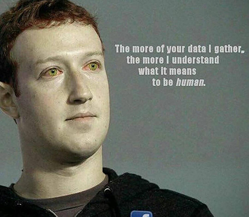

Date of birth 14/5/1984
Residence New York
Occupation Technology entrepreneur
Spouse(s) Priscilla Chan
Children 2
Signature
Mark Zuckerberg is an American billionare, who is well know for being the founder of Facebook. He was born on 14/5/1986, and is married to Priscilla Chan. Mark founded Facebook in 2004 whilst he was still at university. Mark Zuckerberg's social network was an instant success. By December 2006, Facebook had 12 million active users. This figure has now gone up to over 1 billion.
Mark Zuckerberg was born in New York to Edward and Karen Zuckerberg. He developed an interest in Computer Programming
at an early age
Controversy
Mark Zuckerberg periodically comes under fire for his extreme views and comments. One example of this came when an internal memo whithin facebook between Zuckerberg and one of his employees was leaked. “So we connect more people,” he wrote. “That can be bad if they make it negative. Maybe it costs someone a life by exposing someone to bullies." “Maybe someone dies in a terrorist attack coordinated on our tools," he added.
A squirrel dying in front of your house may be more relevant to your interests right now than people dying in Africa.
Mark Zuckerberg
Zuckerberg has made bold predictions about what the world of technology will be like in the future. One of his most far fetched predictions is telapathy
Relatives
| Relation | Name | |
| Father | Edward Zuckerberg | Mother | Karen Kempner |
Many people seem to think that Mark is a robot, with his tight emotions and automatic expressions.

Mark Zuckerberg has a robot butler named Jeeves in his home!
Find out more
23 weird things you didn't know about Mark Zuckerberg
Mark Zuckerberg - Wikipedia
CNN Mark Zuckerberg fast facts